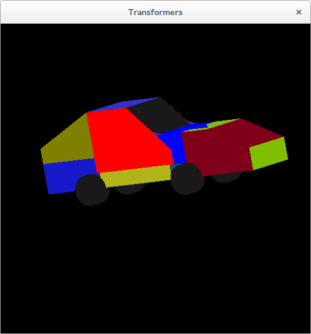
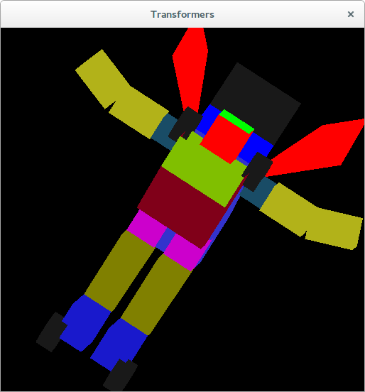
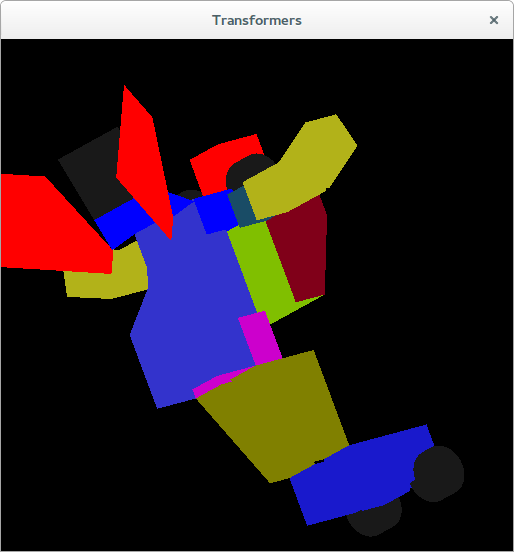
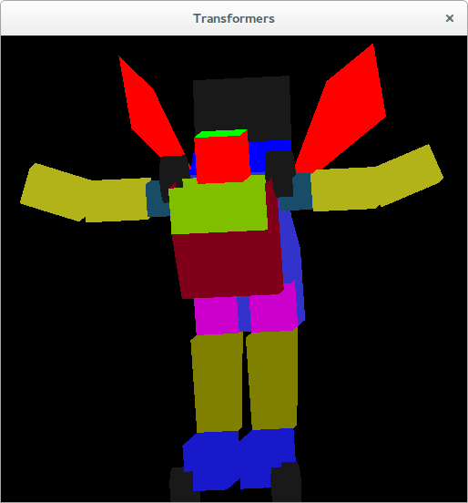
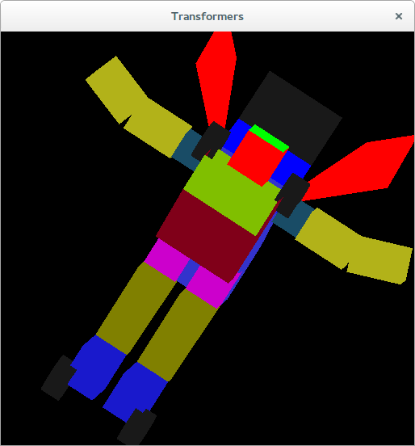
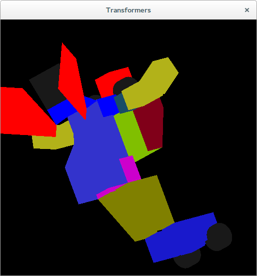
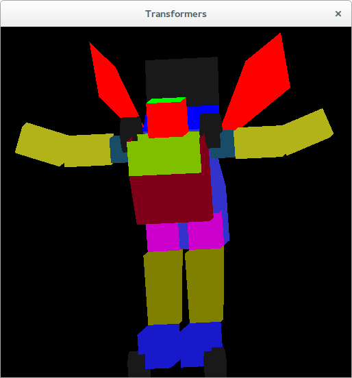

Assignment 2
The implementation of the transformer is inspired from here. The image is

What has been done?
A transformer is made from primitives in OpenGL where each and every joint is controllable. For simple controls, press Space to convert into a robot and press shift + space to convert back into a car.
If more controls are required... the first two lines of the keyboard control each and every part of the robot in combination with Shift along with Ctrl and Alt in some cases.
Screen Shots
 




